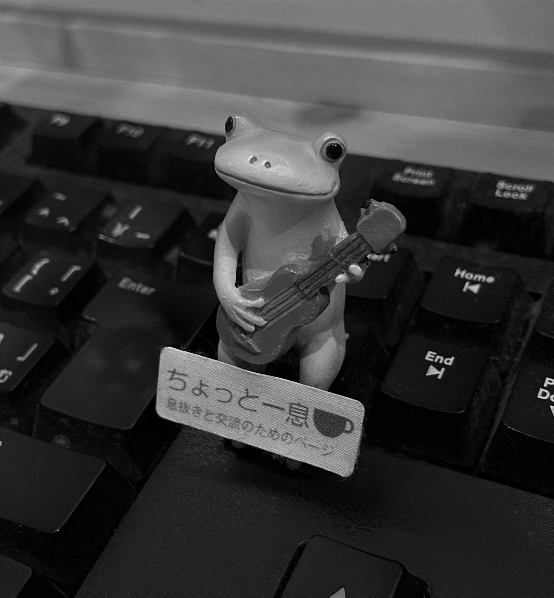

Top
Code
Photos
contact
Profile

Itaru
なんでも面白くしたい人。
40歳手前にして県主催の講座をきっかけにプログラミング（python）にハマる。
佐賀県が生んだ伝説のプログラマー育成カリキュラム、
「SAGA Smart Samurai ゼロから始めるプログラミング塾」１期生。
本業は医療系事務。pythonでゴリゴリ自動化を目指す。
html、css練習にてサイト作成中。
好き⇒guitar coffee camera 嫁と双子の娘
嫌い⇒体育会系ノリの上下関係